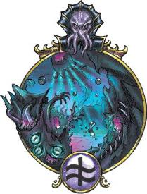
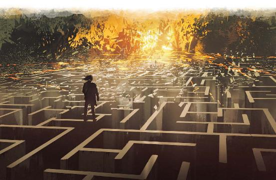
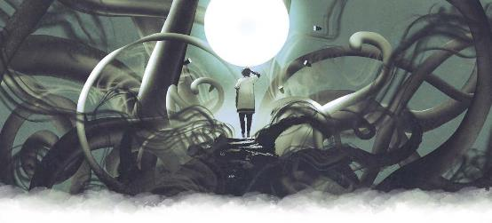

Exploring Eberron p199~203 Xoriat: The Realm Of Madness
原文基于July 2020. PDF Version: 1.04
翻译by Pany_Q（翻译版本：2020年12月08日）

来自瑟瑞奥特的触碰会扭曲你的肉体，腐蚀你的心灵。这个怪诞国度中的住民不是在试图摧毁所有自然的东西就是在尝试改变它们，即使是与瑟瑞奥特最轻微的接触也会带来危险。
至少，这是流行的看法——但这并不完全正确。这个位面的名字 "疯狂国度"是艾伯伦的人们根据自己的看法给它贴上的标签，因为在艾伯伦居民看来，与瑟瑞奥特的密切接触会干扰一个人处理现实的能力。而灵吸怪(illithids)称瑟瑞奥特为 "启示国度"......这可能更准确。如果说拉玛尼亚(Lamannia)是自然的体现，那么瑟瑞奥特就是非自然的体现。瑟瑞奥特是一扇窗，它通向的是凡人通常无法看到也无法理解的的现实的运作方式。它暗示着，时间与空间、秩序与混乱、战争与和平，所有这些概念都是刻意的发明。它们是凡人生活的根基......但在这些根基之下是什么？在房子建成之前，那里有什么，之后又会有什么？瑟瑞奥特拥有这些问题的答案，以及更多。
所有的凡俗生物都与瑟瑞奥特有着联系——这是一个常被故意忽视的事实。凡俗生物在达·库尔做梦。撒法拉斯激发凡俗的愤怒。玛伯尔喂养凡俗的幽影，而伊瑞安则呵护凡俗内心的光明火花。当凡俗死亡时，其灵魂会被引向杜鲁尔。凡俗受到所有位面的影响，而瑟瑞奥特的影响则是驱使凡人产生质疑现实的欲望。它可以成为灵感的源泉，尤其是对艺术家而言；它帮助人们打破自己既有的观念，以全新的方式看待事物。但同时，瑟瑞奥特也会如同炽热的太阳那样融化任何靠得太近的翅膀。只有与它保持距离的情况下才可能获得积极的影响，因为倘若凡俗太过注视瑟瑞奥特的深渊，就会与他们的原本的现实失去联系，再也无法行走于自然的世界。因此，瑟瑞奥特是一个非常危险的地方，但位面本身并不是邪恶的或破坏性的。它是宇宙平衡的一部分，正如其他位面的概念一样重要。伊瑞安带来生命，拉玛尼亚是自然的蓝图，达安维提供了秩序的指引。瑟瑞奥特是得以窥见现实之下和之上的一瞥，是一睹可能成为但没能成为的现实的裂缝——同时也是见证以不可见的形式存在着的现实的窥口。
在凡俗眼中，瑟瑞奥特看起来比奇斯瑞更加混乱。然而，瑟瑞奥特并不是由混沌的概念所定义的；更准确地说，是凡俗不能理解指导其变化的逻辑。此外，奇斯瑞的持续变化还都是自然的：火焰和闪电，石头和水。但在瑟瑞奥特，龙卷风可能是由墨水组成的。沙尘暴中的每一粒沙子可能都是安黛尔女王奥萝拉的微型半身像，或者是一颗小小的跳动的心脏。这不是单纯的混乱，而是非自然。
无序魔法(Unpredictable Magic.)：每当一个生物施放了1环或以上的法术后，立即骰《玩家手册》第3章的狂野魔法浪涌表格。
危险启示(Dangerous Revelations)：每当一个生物完成一次短休或长休，或生命值降低到0时，必须进行DC14的魅力豁免检定。若豁免失败，就会患上随机一种短暂性疯狂（见《城主指南》第8章）。如果该生物后来又一次豁免检定失败，则之前的疯狂效应就会被新的疯狂效应取代。
时间错觉(Time Is an Illusion)：在瑟瑞奥特，时间比在其他任何位面都更不可靠。冒险者们可能会感觉已经在疯狂国度中被困了一辈子，然后发现在艾伯伦仅仅只过去了一瞬间。他们甚至还有可能回到了他们离开之前的艾伯伦，进而导致他们滞留在另一个时空，关于这点将在下一节讨论。
陌生现实(Strange Reality)：重力、时间还有身份本身，这些冒险者们所熟悉的东西在瑟瑞奥特变得不那么靠得住了。每当角色进入一个新的位层，DM可以从下面的《瑟瑞奥特特性表》中选择一个特性。这个特性可以在冒险者呆在该位层的时间里一直持续，也可以在每当战斗开始时、有生物骰d20出1时，或在DM选择的任何其他时间换成另一个。这些效应没有豁免检定，一个效应会影响到该位层的所有生物，直到DM用一个新的特性将它替换。在描述一个特性时，不要只描述效应，而是要解释它是如何体现的。比如加速术和缓慢术表现为局部时间流的变化。当生物侦测思想(detect thoughts)时，他们可以听到其他人的思想像音乐一样在自己周围流淌，这时若将注意力集中在某个生物身上，就可以翻译出旋律的含义。每一种效应都反映了这一位层的现实中的一种奇特的新特性。
|
D13 |
特性Trait |
|
1 |
生物可以在任何表面上行走——墙壁、地板、天花板。如果一个生物跌落，则方向是随机的，不一定是朝向地板。 |
|
2 |
生物处于缓慢术的效果下。 |
|
3 |
区域内的空气会呈现出液体的性质。生物并没有溺水的风险，但必须通过游泳来移动，此区域适用水下战斗的所有效应。 |
|
4 |
生物处于加速术的效果下。 |
|
5 |
生物处于镜影术(mirror image)的效果下，被摧毁的分身不会再出现。 |
|
6 |
每当生物被攻击命中，该生物就会变成隐身状态，直到其下一个回合开始。 |
|
7 |
生物可以使用一个附赠行动传送到30尺内一个能看到的的未被占据的空间。 |
|
8 |
生物处于侦测思想法术的效果下，但不能用此法术继续深入其他生物的思想。 |
|
9 |
生物处于气化形体(gaseous form)法术的效果下，成为一团思想能量构成的云雾。生物在这种形态下可以说话（用思想形成声音）。 |
|
10 |
生物会变成区域内随机生物的样子。这对能力没有影响，而且体型不变（所以如果一个半身人变成了食人魔的样子，就会是一个小型的食人魔）。 |
|
11 |
生物获得60尺真实视觉。 |
|
12 |
生物变得对心灵伤害易伤，即使是正常情况下免疫心灵伤害的生物也是如此。 |
|
13 |
大小取决于视角——地平线上的那座山到底是真的巨大，或者你可以伸手把它握在手里？所有生物都随机受到变巨/缩小术(enlarge/reduce)的影响。生物在其回合开始时，骰1d3。如果是1，则其体型缩小，如果是2，则其体型为其正常体型，如果是3，则其体型变巨。 |

诸位面的结构自有其逻辑。伊瑞安是开始，新的种子在这里萌发。玛伯尔是终结，吞噬万物。时间在不同的位面有时会以不同的速度流逝，但它总是向前的...——除了在瑟瑞奥特。
想象一下，时间是一座迷宫，物质位面是一只奔走于其中的老鼠，其他位面(译注：除瑟瑞奥特之外)则像一顶皇冠一样戴在这只老鼠的头上。这就是“巨龙预言”(Draconic Prophecy)的运作方式。它不会直接告诉你将会发生什么，因为那还没有被决定。巨龙预言就像是迷宫的路线指示图，它能够揭示诸如：如果你在“奥萝拉女王被暗杀”处左转，然后在“布鲁兰成为民主国家”处右转，你就会到达“苏尔•卡特什(Sul Khatesh)从她的监狱中被释放”这样的可能的路线。预言能够展示要到达所希望的结果而所需要采取的路径——这是一张展现多种可能的未来的地图。
但瑟瑞奥特并不束缚于这只老鼠，而是高悬于整个迷宫之上。当冒险者离开瑟瑞奥特，他们可能会回到错误的时间，跌落到迷宫中更远的过去。他们可能会发现自己身处达坎帝国，或者正好落在在龙纹战争的激战之地。在这个过程中，他们可能会改变未来。也许他们会帮助哈拉斯·塔卡南*(Halas Tarkanan)赢得龙纹战争的胜利，进而导致龙纹家族在取得现在的辉煌之前就遭受重创，家道中落，而变异龙纹的后裔转而兴旺发达。这些变化会让现代科瓦雷成为一个截然不同的地方。冒险者们导致的这些变化，既相当于往迷宫中投放了一只新的老鼠。这只新老鼠成为了新的主物质位面。它抢走了旧老鼠的位面皇冠，成为了新的现实，所有位面在新现实汇聚，时间以现实为起点正向流逝。但另一只老鼠依然还在迷宫中的某处，被遗忘着，失落地蜷缩在某个角落里，但还活着。如果冒险者们回到瑟瑞奥特并改变了主意，想要找回最初的那只老鼠、恢复它作为主物质位面的地位，也还是有可能做到的。所以瑟瑞奥特提供了翻天复地的变化的潜力——同时也保留了恢复被遗忘的过去的可能性。
*译注：哈拉斯·塔卡南Halas Tarkanan，龙纹战争时期变异龙纹家族的领袖。正史中输了。
这种视角对理解异变魔(daelkyr)至关重要。它们立于迷宫之上，但它们也可以降临迷宫之中。它们在老鼠身上做实验，转变它。如果老鼠被它们改变太多，会发生什么？可能老鼠会爬到一个角落里默默死去，然后另一只新的老鼠被放出来——旧的主位面逝去了，一个新的世界代替它继续前进。这就是吉斯人(gith)相信的他们的世界所发生的情况，详细描述见奇斯瑞(Kythri)章节。吉斯人原本的世界是曾经的主物质位面，现在的它可能仅仅是另一只迷失在迷宫中的、被遗忘了的老鼠。如果异变魔崛起并完成它们的计划，那么现在的艾伯伦有可能会被从诸位面剥离；它仍然会存在，但只会是一个被遗忘的影子，一个新的现实会成为诸位面的中心、取代它的位置。
如果这听起来没有道理，那也很正常的。科瓦雷的大多数学者都会认为这是一种疯狂的理论，瑟瑞奥特的名称也由此而来。但另一些人可能会说，这符合创世巨龙的神话。伊瑞安是开始，玛伯尔是终结——而瑟瑞奥特独立于这个过程之外，可能它正是是创世巨龙们用于研究自己的造物的、高于一切的观测台。约束其他位面的法则对瑟瑞奥特不起作用，它拥有所有被抛弃的理念。也许天命诸神并非从无到有地构建了现实，而是从已存在的所有理念中雕刻出了现实——那些被削去的东西就被丢进了瑟瑞奥特。
这是一个大多数冒险者永远不需要担心的形而上的话题。总之可以从中得出三点启示。瑟瑞奥特可作为一个可以改变历史和现实本身的出发点。异变魔已经这样做了不知道多少次。而冒险者们也有可能通过瑟瑞奥特改变历史和现实，或者挽回他们的过失。
在瑟瑞奥特，大量的色彩漩涡般旋转流变，它们的色调在艾伯伦前所未见。空间中的涟漪在波动过处搅乱时间。强大的情感冲破、炸裂，穿过位层的界限蔓延开来。这些东西可能在某种意义上是活着的——但绝对无法与之交流。本节将介绍一些最与冒险者相关的生物。虽然这个位面中还可能有着其他可以被认为有生命的存在，但几乎可以肯定，它们的思维过程从根本上就是非人的，它们也不会把有机物认作生命。
异变魔曾来到艾伯伦，腐蚀它，改造它的住民，在让达坎帝国土崩瓦解后，他们被封印在了凯博尔。其中有六个异变魔的名字为人所知，但肯定还有其他未为人知的。他们至今仍被囚禁在凯博尔，等待机会越狱，完成他们未尽的事业......也许还要为新的现实铺平道路。
从未有过凡俗前往瑟瑞奥特的记录——至少，没有人回来——因此，这样做的冒险者很可能在展开一场前所未有的历史性旅程。而在这次旅行中，他们可能会有一个令人震惊的发现——虽然异变魔可能正被束缚在凯博尔，但他们也仍然在瑟瑞奥特。腐化者迪恩(Dyrrn the Corruptor)、瓦拉拉(Valaara)、贝拉希拉(Belashyrra)——每个都盘踞在瑟瑞奥特的一个领域中，被他们的仆人和军队环绕。这是由于瑟瑞奥特与时间的离奇关系导致的。异变魔之所以会在瑟瑞奥特，可能是因为它们还未离开，也可能是因为他们已经从牢狱中被释放，然后回到了瑟瑞奥特。可以这样说，如果将时间看作一个迷宫，异变魔既在迷宫之上俯视全局，同时自己也在迷宫中奔走。他们现在不能回到艾伯伦，因为他们已经在那里了。这可能也是为什么它们看起来对自己的长期囚禁毫不在意——因为它们在时间之上看着一切的展开。所以冒险者们可以在瑟瑞奥特与任何一个异变魔发生互动，但在那里与它们战斗并不会影响它们在艾伯伦的行动。不过，这可以帮助冒险者了解异变魔的弱点，或者也许可以获得未来能用来对付它们的工具或武器。
这个位面上的本地居民往往怪诞到凡人们甚至认不出它们是活物的程度。人们在艾伯伦常见到的的异怪大部分并不是由瑟瑞奥特本身创造的。事实上，是异变魔——被设计为与物质位面及其凡俗互动的存在——创造了这些异怪，作为他们的仆人、士兵和过往征伐的纪念品。在艾伯伦，大多数异变魔的势力由混合的种族构成；可以看到夺心魔为任何一位尊主服务。在瑟瑞奥特，不同种族则更加隔离；眼魔栖息在贝拉希拉的领域，而夺心魔盘踞在迪恩的国度。
瑟瑞奥特还有多少别的异变魔所制造的恐怖事物还未释放到艾伯伦？这在一定程度上取决于异变魔还改变了多少别的现实。夺心魔是异变魔毁灭吉斯人所留下的遗产，正如狰狞异变怪(dolgrims)和嶙峋异变怪(dolgaunts)是达坎复灭的纪念品。
除异变魔制造的危险的异怪外，还有一些异怪是由诸位层本身产生的。这些位面生物离奇怪诞、令人不安，但除非被激怒，否则并不具有威胁性。本地异怪(Native Aberrations)表提供了一些例子。
|
D6 |
异怪Aberration |
|
1 |
瓦尔族(Varr)是一支善良、慷慨、有心灵感应的半身人种族。但他们和他们的艾伯伦表亲不太一样——他们有着复眼和带刺的舌头，而且他们会在食物上吐酸液来消化食物。 |
|
2 |
柯雷斯族(Craiss)是一种超小型的类昆虫生物，他们天生就知道与之对话的生物的语言。他们不会停止抱怨今天过得非常糟糕。 |
|
3 |
[[洋葱气味]](scent of onions)是一种有智能的泥怪，可以装成类人生物的样子。他们可以发出声音，但通过嗅觉、触觉和味觉与同类交流时。 |
|
4 |
希雅族(Cya)是一种不可见的虚体生物，他们与其他生物唯一的交流方式是通过操弄后者的倒影。 |
|
5 |
[[故友相见欢]](pleasure of seeing of a familiar friend)是一支具有共情能力的植物种族。他们不是通过语言，而是通过投射情感来交流。 |
|
6 |
赛林族(Xaelin)看起来和人类一模一样——除了他们光滑无特征的脸：没有眼睛、耳朵或鼻子。他们拥有60尺真视视觉，但无法看到、听到或以任何其他方式感知到该范围以外的任何东西。赛林族自称对艾伯伦一无所知——尽管如此，他们的习俗和时尚却表现出艾伯伦各个历史阶段的文化的痕迹。 |
在瑟瑞奥特的虚空之中，还存在着比异变魔更加强大的力量。这些精魂是如此庞大和陌生，以至于只能通过观察它们在现实中制造的涟漪才得以感知它们的存在。无论是无形城堡(the Unseen Citadel)，还是贝拉希拉，它们都是在某种更上位者的意识中所形成的概念。这些伟大存在会沉睡吗？它们会有意识地调整自己的位层吗？还是说它们只是被创世巨龙们抛弃的理念，是最终没有被采用的现实的范式？如果说瑟瑞奥是被抛弃的概念的国度，那么这可能就是异变魔无休止地追求扭曲——或者说完善——现实背后的动力。
瑟瑞奥特是一片不存在物质的虚空，这里甚至没有时间和空间的概念，凡俗生物一旦进入其中，实际上就不存在了。但在这片虚空中存在着强大的力量，正是它们的思想的映射形成了瑟瑞奥特各个位层。每一个异变魔都栖身于孕育了其自身的那个位层中——该位层的基调通常反映该异变魔的特点，异变魔可以在自己的位层中的任何地方使用其巢穴动作。不过，在瑟瑞奥特，并不是所有的位层都能支持凡俗生命存活——有的位层中，强烈的重力会压碎任何具有物理实体的生物；还有的位层中，所有物质都会转化为纯粹的思想。
冒险者们如果想要从一个位层到达另一个位层，就需要先找到传送门才行。根据每个位层的特性不同，传送门也都各不相同，而且，使用传送门总是要付出一定的代价。有时，代价是记忆，DM设定记忆的情绪基调（喜悦、悲伤、愤怒），然后每个玩家描述自己的角色所失去的记忆。还有别的传送门，其使用代价可能是知识，但这并不是从冒险者身上夺走什么知识——相反，当他们通过传送门时，他们会知道一个他们宁可不知道的秘密。
在探索瑟瑞奥特的位层时，重点是要突出该位面从根本上的非自然风味。前文的《瑟瑞奥特特性》表提供了对游戏性有影响的常态变化效果，此外，下述的《瑟瑞奥特怪异属性》表还介绍了一些可具体表现位层的独特环境的例子。另外，瑟瑞奥特的位层中蕴含着启示。这些启示可以是关于冒险者不想知道的真相，也可以是关于现实本身的秘密。关于这些将在下述瑟瑞奥特神器一节中详细讨论。
|
d12 |
效应Effect |
|
1 |
不死生物被认为是活的生物，而活的生物被认为是不死生物。 |
|
2 |
你可以通过重力方向的变化来判断时间。如果你走在天花板上，现在是中午。到了晚上，你就会回到地板上。 |
|
3 |
这一位层中的一切——食物、建筑，甚至空气本身，都是活的。 |
|
4 |
这一位层中没有声音，语言表现为环绕说话者的发光文字。音乐和法术的言语成分表现为光芒形成的图案。 |
|
5 |
任何通常会造成伤害的攻击或效果反而会恢复生命值；任何通常会恢复生命值的东西则会造成黯蚀伤害。 |
|
6 |
明亮光照充满了这一位层，但所有的光源都会起到反效果。任何通常会产生明亮光照的光源反而会产生黑暗，任何通常会产生微光光照的光源则会将光照水平降低为微光。 |
|
7 |
当生物处于这一位层时会失去视觉，但并不算失明，而是可以通过增强了的嗅觉和味觉来感知周围的环境。 |
|
8 |
这一位层是一系列浮动的平台。河流在空无一物的空气中流动。 |
|
9 |
该领域内的无机物——包括所有建筑和工具——都是不可见的。 |
|
10 |
这里有许多镜面，但镜中所反射的东西东西与其所照的生物的行动并不一致。 |
|
11 |
地面不是泥土构成的，而是由甲壳质构成的。空气中弥漫着昆虫的嘁嘁喳喳声。 |
|
12 |
河流和池塘是由活的原生质构成的，还会向过路者伸展出来。 |
这里是异变魔“众眼之主(the Lord of Eyes)”贝拉希拉的堡垒和诞生之地。眼魔正是从它的想象中诞生，无形城堡也是众多类眼魔（beholderkin）的家园。小小的漂浮的眼睛像昆虫一样嗡嗡作响地在这里飞来飞去。像千足虫一样的生物背上长有一排排的眼睛。真正的眼魔大多专心钻研着特定的事物，除非被打扰，否则不会去关注外来者。有的研究奇怪的画作。有的观看映照着艾伯伦或其他位面的影像的探知水池。而还有的则研究看似平凡的物品，比如一把生锈的铁钥匙，一只死兔子，或者一顶昂贵的帽子。不过，也有少数眼魔会在城堡里巡逻，提防着入侵者。
构成城堡表面的材料散发着肥皂泡一般的、令人无法聚焦视线的色泽，仿佛墙壁和地板都是模糊的。大厅里到处摊放着镜子。有的镜子反应慢一拍，显示出比现在年轻的你；有的则显示出未来的一瞥。探知水池则揭示了你不想知道的秘密——艾伯伦上正在发生的事，过去的景象，或者可能的未来。
这一位层是“腐化者”迪恩(Dyrrn)的领域。紫色的田野沐浴在紫外光线下，荧光雕塑散发出诡异的暗光。瓦尔族(Varr)农民一边跳舞一边照料田地，但他们所耕种的是情感。任何人走过田地时都会感觉到一股强大的情绪（恐惧、悲伤、愤怒、内疚）冲刷着他们。每块田地上都有一个哨所，里面有一个古老的大脑，一条明亮的思维之线将情绪传送到位于这个位层中心的迪恩的高塔。
迪恩的塔是由发光的纯思想之线缠绕在一根巨大的钢铁脊柱上构成的。这座塔里充满了肉体塑形(fleshcrafting)的工具。这里有装满血液的池子和流淌着羊水的沟渠，有巨大的器官没有目的的脉动着，还有无人看管的触须在地板上爬行。冒险者可能会进入某个房间，发现里面有冒险者自己的半成形的克隆体......或者克隆体已经完成，并认为冒险者们才是邪恶的冒充者。尖塔放大了迪恩的心灵感应能力，使其能感应到该位层内所有的活的生物。迪恩擅长于腐化，它可能会通过精神投影给冒险者施加挑战，比如伪装他们记忆中的熟人的样子，然后在他们与盟友间挑拨离间。
每个异变魔都有一个家园位层，但瑟瑞奥特的位层是无尽的，每个位层都反映了一个被废弃的想法或一个令人疯狂的真相。可以参考下面的例子：
憎恶之屋(A House Built from Hate)：每个角色看到的这栋房子的样子都略有不同，但他们都能感受到从墙壁中渗出的恨意。镜子里反映出观看者厌恶的东西的图像，房子里的书本记载了冒险者们认识的每一个人——包括彼此——所犯下的可憎的行径。冒险者们在房子里呆得越久，就越容易互相仇恨......或者自我厌恶。
纯白空间(Empty White Space)：这无尽的、空旷凄凉的孤独似乎没有尽头。为了继续前进，角色们必须把他们的旅行演出来——假装他们在旅行，就像假装自己的生命有意义一样。如果他们能坚持演出这场戏，他们想象中的世界就会在他们周围形成。
葱郁果园(A Lush Orchard)：树上长满了秘密，而更多的秘密则像小鸟一样在空中嗡嗡飞舞。其中有些可能是冒险者们的秘密，或者是他们敌人的秘密。其他的则是陌生人的秘密和关于现实的秘密。冒险者们是堵住他们的耳朵，还是试着去听？

护门者的封印阻挡了前往瑟瑞奥特的通路，但疯狂国度仍有许多方法可以对世界产生影响。
瑟瑞奥特的显能区域在阴影湿地很常见，在其他地方则很稀有。瑟瑞奥特显能区域中的位面效应很少像位面本身的怪异特性那样引人注目。不过，显能区域仍可能会表达一个或多个该位面共通特性。最常见的特性是“危险启示”。在瑟瑞奥特显能区域徘徊的人经常发现异质的概念悄悄进入他们的脑海，灌输陌生的信念，或者扭曲他们对现实的感受。这些区域很容易产生黄泉巨龙的信仰。在阴影湿地，护门者努力阻止人们进入这些区域，而黄泉巨龙的信徒则认为这些区域是圣地。
“无序魔法”也是一个常见于显能区域的共通特性。这类区域经常有非自然的植物或动物种群，但这些效应并不持久，而且每一代都会变化。“时间错觉”和“陌生现实”这两个特性很少能在显能区域中见到，而且可能不会一直处于生效状态。这些效应可能只有在拉维翁(Lharvion)满月时，或者举行可怕仪式时才会变得活跃。
上一次瑟瑞奥特相接时，异变魔带着军队穿越了现实的壁垒，摧毁了达坎帝国。远古的护门者德鲁伊所制作的封印将异变魔束缚在了凯博尔，同时也让瑟瑞奥特无法再次相接。瑟瑞奥特的远离期没有显著效果，而且和奇斯瑞的一样不可预测，不过瑟瑞奥特的远近周期往往比奇斯瑞的慢得多。目前没有五国公民到访瑟瑞奥特的记录。大多数学者认为护门者的封印阻止了任何位面旅行的可能......尽管可能有人秘密地在某个显能区建造了一台超凡奇械(eldritch machine)，也许还使用了灵吸怪的大脑或配合月亮拉维翁的位置。如果冒险者们偶然撞见黄泉巨龙的邪教徒刚好完成了这样一个险恶的仪式，会发生什么？
最常见的瑟瑞奥特神器是异变魔创造的共生体物品(symbiont items)。这是一种活的物品，本书第7章以及《艾伯伦：从终末战争中崛起》第5章中可找到更多范例。不过，冒险者们也可能会偶遇在异变魔入侵时期被带到艾伯伦的神器，或者更古老的遗物。瑟瑞奥特物品可能可以扭曲时间。从小的方面来说，这可以解释移位斗篷(cloak of displacement)的力量：它总是显示你几秒之后所在的位置。一个更强大的神器可以允许穿越时间，或者重置一小块区域内的时间。这条时光隧道是否允许回程呢，还是说使用者会被永远困在另一边？
瑟瑞奥特还以授予令人疯狂的知识和肉体变化而闻名。这两类效果都可以通过《城主指南》第七章的超自然赠礼( supernatural gifts)来体现。下面是几个例子：
护门者的封印使得瑟瑞奥特成为冒险者较难到达的位面之一。依然，前往瑟瑞奥特的冒险很可能将是一场带来启示的旅程。与瑟瑞奥特的居民的互动主要限于黄泉巨龙的邪教徒以及异变魔的仆从。不过，还是有一些方式可以让这个位面催生冒险。
位面宗主(Planar Patron)：具有旧日支配者宗主的邪术师可以说自己的宗主并不单单是异变魔，而是瑟瑞奥特内固有的虚空霸主之一。这样的接触是前所未有的——这种联系的本质是什么？可能霸主并不是与邪术师交流，而是直接将知识灌注进其意识中。还有一个令人不安的可能性是，邪术师本不应该接收到这些信息，这个知识流可能本来是要传递给一个强大的灵吸怪，但邪术师却与这个心灵通道产生了联系。这可能是获得灵吸怪的邪教计划线索的机会，但邪术师能对此做些什么吗？
未来一瞥(A Glimpse of the Future)：当冒险者们干扰了某个黄泉巨龙会的仪式后，他们发现自己到了三年后的未来......而且发生了一些非常可怕的事情。也许哀伤故地已经蔓延到吞噬了布鲁兰。也许霸主苏•卡特什已经挣脱了她的束缚，正在带领着安黛尔的邪术师骑士们征服五国。冒险者们必须弄清如何阻止这个未来成真……然后想办法回到自己的时代。
林中细语(Whispers in the Woods)：当冒险者们在某个瑟瑞奥特显能区与黄泉巨龙的邪教徒战斗时，其中一个角色受到了一个启示：梅里克斯·D·卡尼斯(Merrix d'Cannith)将在两年内毁灭世界。它是否提供了什么额外的信息，还是只有这一个绝对的事实？角色知道这是事实......但这究竟是对未来真实的一瞥，还是在引诱角色走上一条黑暗的道路？